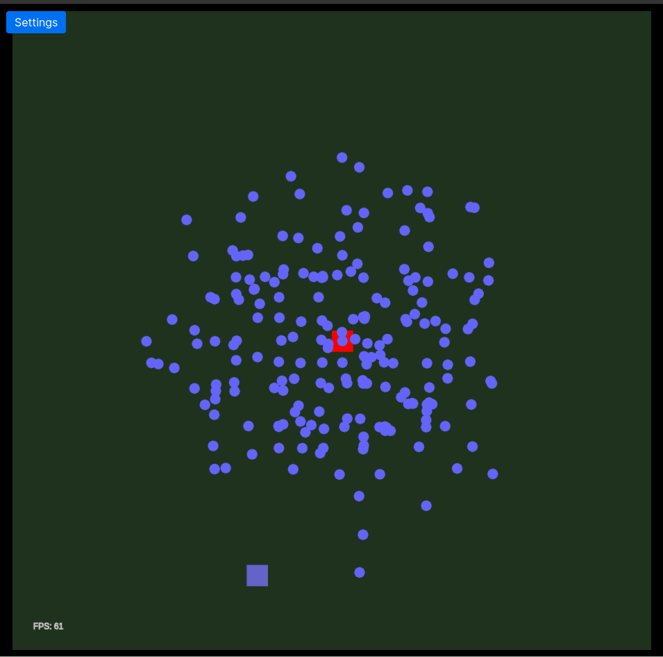

Ants colony algorithm visualization
- 893 words -
A few months ago I read about the Ant colony optimization algorithms and since then I really wanted to give a shot at doing my own implementation. This algorithm is cool because this is a different kind of emerging behavior which I already experimented with and find fascinating.
So I came up with this web page which works reasonably well 🎉. However, after working on this project for a few days I realized that I messed up my architecture and that I will not be able to extend the project as I want to without an heavy refactoring of the code. And since I have other shiny other project ideas I want to play with, I'll just add this project to my big collection of unfinished side projects and maybe get back at it when I have time.
This kind of posts is probably not very useful nor interesting for anyone other than me, but I see it as some kind of journal that I'll probably be happy to look at one day.

Ants behavior
The idea here is to have a colony of autonomous ants all starting on the same point -the anthill- and moving on a grid,looking for food. Each ant can walk on the grid with the only constraint that they can't go twice on the same cell in one trip.
During its trip an ant can either:
- Find a spot with some food and stop moving;
- Get stuck because it surrounded itself with cells it already walked on;
- Never get stuck and not find food, in this case it will walk until its time to live (the preset duration of the trip) is reached.
In the case where an ant finds some food, it will go back to the anthill and lay down some amount of pheromones on all the cells it visited during this trip. The amount of pheromones an ant lays down is inversely proportional to the length of its path, meaning that the ant finding the shortest path to food will leave the strongest trail.
When it walks an ant will follow the pheromones: Each surrounding case is evaluated and attributed a probability to be chosen depending on its amount of pheromones and whether or not it contains food. The ant will then "throw a dice" and choose a cell following the probabilities and the result of the dice.
For the first few iterations the ants just walk randomly on the grid until one finds some food and start creating a trail. Then for the next iterations the ants will generally follow this trails more or less closely, allowing some ants to find a better solution and gradually optimizing their way. That's what we can observe in the following gif.
The cells outlined in a greyish color indicate the cells where some ants walked but didn't found any food, on the first iterations there are a lot of these cells and they get fewer once ants find the food source. In this example the convergence could happen sooner if the time to live of the ants and their attraction to pheromones were tweaked.
 This visualization shows the ants (blue dots) refining the pheromone trail for one food source
Improvement points
There are a few things I want to change in the app:
- Obstacles: For now I am able to say that a cell is an obstacle, and I created a function to create some random obstacles on the grid. That works quite well for now, but I would like to improve that to create actual mazes as I did in another project. This could be done but that would mean changing how I handle the grid and the ants moving.
- Perception radius: The main issue with the current state of the project is that ants have a defined perception radius representing the cells they can see around them. However due to the way I implemented my neighbors search and my obstacles this doesn't work well with radius > 2.
Maybe a V2
Maybe I will do a v2 of this project. If I do I'll think from the beginning of how to implement the ants "vision" (how they detect obstacles and where they can move) which should allow me to have a more efficient neighbor selection algorithm.
I would also like to add some feature which shouldn't be too hard to implement:
- Automatic TTL: The ants could increase their TTL automatically if they don't find anything for a few iterations allowing a more efficient exploration of the map.
- Ant selection: Instead of having all the ants which find food to leave a trail, I could use some min-max algorithm or another way to select the best ant to have only one trail.
- Bees battle: When ants leave a trail when they go back to the anthill, bees remember their position and communicate it to the other insects. This would create a different approach to the path finding algorithm and it would be interesting to see both types of insect running for the same food source and battling to get more than the others.
In the meantime I still have fun looking at my little insects finding their way in this small virtual and meaningless world 🐜